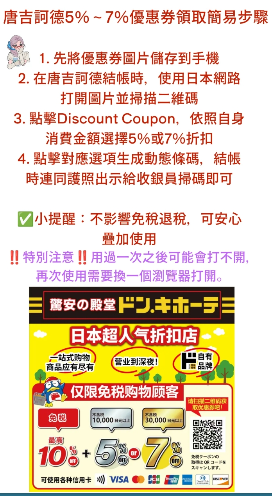
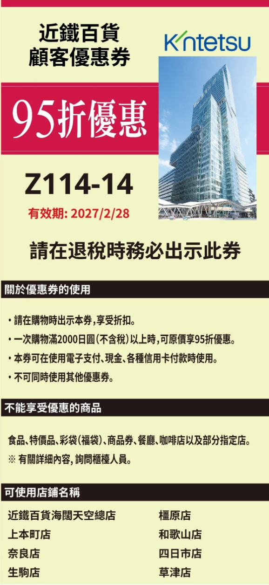
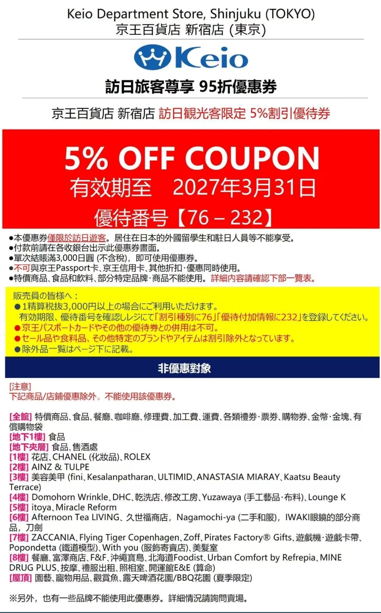

圖片放大
💡 掃碼請把螢幕調到最亮；點圖片可切換放大模式。
搭乘帝產巴士接駁專車前往 JR 函館站，步行約 6 分鐘即可抵達飯店。
推薦鄰近海灣的「碼頭末廣店」或「本店」，必點招牌中華雞腿堡。
漫步八幡坂、元町羅馬天主教堂等異國風情坡道。
冬季約 16:00 日落，建議提早上山，捕捉日落與雙海灣百萬夜景。
悠閒享受全日本評比前列的百匯美食。
退房後出發，沿途欣賞內浦灣海景與雪景。
冬夜來一碗辛香濃郁、辣度可調的湯咖哩暖胃（如 GARAKU 或 Suage+）。
札幌地標「白色戀人公園」全面改裝後保留夢幻歐式城堡風格，並加入許多互動體驗與全新拍照點。
浮誇巨型道具讓你瞬間變小人，還有療癒的投影互動遊戲。
小樽總鎮守，社務所 09:00 開門，早晨人少好拍巨大鳥居與紅燈籠參道。
🐟 蝦夷神籤：日進月歩みくじ（釣鯡魚籤）冬季營業（10:00–16:00），近距離看巴布亞企鵝搖擺走過雪地！推薦接續觀看海豚表演＋第一場企鵝散步。
🐧 企鵝雪中散步：11:30～11:40（另有 12:40／13:30／14:40）先看白雪運河（可搭 40 分鐘遊覽船），再沿堺町通（北一硝子、LeTAO、六花亭）逛至「童話十字路口」，參觀百年音樂盒堂與每 15 分鐘噴氣的蒸汽鐘。
12 月約 16:00 天黑，沿運河散步回小樽站欣賞 63 座瓦斯燈點亮後的浪漫雪景；若體力充足可再上天狗山（《First Love 初戀》取景地），隨後搭 JR 回札幌。
※ [10] 高島經由約 18–20 分鐘；[11] 赤岩經由約 25–26 分鐘。冬季旺季常加開直行便，出發前可再確認當日公告。
雪地自駕風險高，報名札幌出發的巴士團最輕鬆。通常含白鬚瀑布、青池、富良野精靈露臺。
🌽 美瑛神社：富諸来しみくじ（玉米籤）新千歲（札幌）第 1 航廈國際線報到出發 ➜ 抵達桃園機場第 2 航廈。
主要移動在函館、札幌、小樽，單買「北斗號」指定席更省錢。
北海道幅員遼闊、冬季移動耗時，一天專注一個區域最舒適。
冬季山頂極易起霧，確認能見度再搭纜車上山。
避開觀光大街高價店，函館朝市、小樽三角市場新鮮又實惠。
狸小路遊客多、部分標價偏高；札幌站 BicCamera、大丸或超市常更划算。
下午 3 點左右人最少；郊區、神社、小吃攤請隨身備足日幣現金。
路面常見透明「黑冰」，切勿穿一般平底雪靴，必要時便利商店買冰爪套。
日本街頭幾乎沒有垃圾桶，垃圾收好帶回飯店或超商分類丟棄。



Transaction ID 與 QR CodeGlobal Blue – Shop Tax Free（簡中／英／日文）Transaction ID ➜ 核對資料完成。帶免稅商品先刷護照判定紅綠燈：綠燈可直接去託運行李；紅燈須帶商品至海關人工抽查。
J-TaxRefund、JPrefund、Global Blue、IntaSect（無 PIE VAT）。※ 11 月新制後百貨多為 2.3%；3COINS 固定扣 ¥320（實退 ¥680）。若再去機場 Cash JAPAN 領現會再扣退稅額 10%（最低 ¥100）。